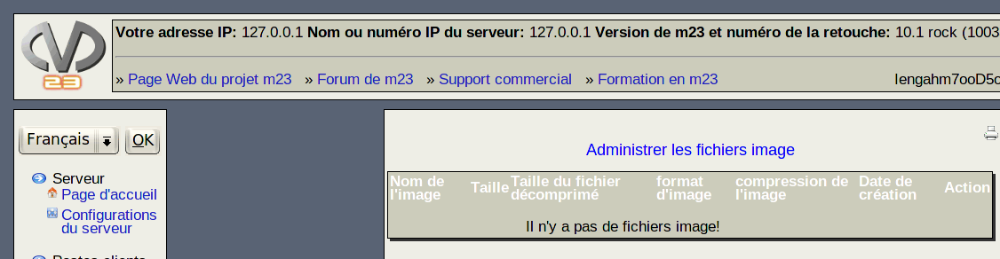

suivant:
Sauvegarde du serveur
monter:
Serveur
précédent:
Gérer les clés GPG
Table des matières
Administrer les fichiers image
Sur cette page sont affichés tous les fichiers image enregistrés dans le répertoire

/m23/data+scripts/clientImages
. Vous pouvez les effacer en cliquant sur
Effacer
après le nom de l'image.
dodger 2012-12-10